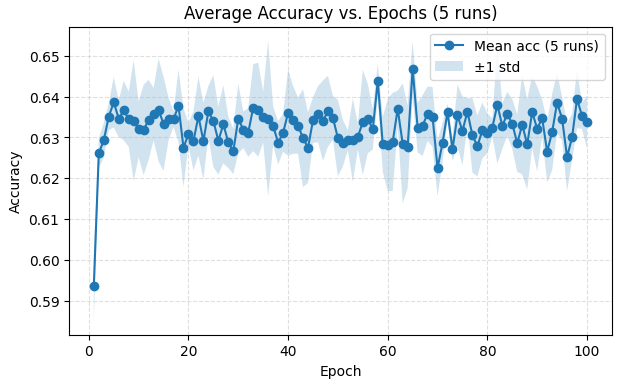

Atividade: 2. Perceptron¶
Exercício 1¶
A brief description of my approach¶
Para gerar os dados utilizo a função multivariate_normal, que permite passar o vetor de médias e a matriz de covariância para aplicar a distribuição Gaussiana multivariada. Em seguida, aplico um vstack para formar o vetor X, empilhando os arrays verticalmente, enquanto para o vetor y utilizo um hstack, que os empilha horizontalmente.
Na implementação do Perceptron, crio um loop externo para limitar o número máximo de épocas, caso não ocorra a convergência. Dentro desse loop, antes de entrar no interno, inicializo as variáveis updates e correct com zero. No loop interno, verifico se ocorre algum erro; em caso positivo, recalculo os pesos e o viés. Caso não ocorra nenhum erro durante toda a época, significa que houve convergência, e o loop é interrompido.
Generate the data:¶
mean_class0 = np.array([1.5, 1.5])
mean_class1 = np.array([5.0, 5.0])
cov = np.array([[0.5, 0.0],[0.0, 0.5]])
X_class0 = rng.multivariate_normal(mean_class0, cov, size=samples_per_class)
X_class1 = rng.multivariate_normal(mean_class1, cov, size=samples_per_class)
X = np.vstack([X_class0, X_class1])
y = np.hstack([np.zeros(samples_per_class, dtype=int), np.ones(samples_per_class, dtype=int)])
Ploting the Data¶

Perceptron Implementation Task:¶
r=0.01
max_epochs=100
rng = np.random.default_rng(seed)
n, d = X.shape
w = np.zeros(d)
b = 0.0
acc_hist = []
for epoch in range(1, max_epochs+1):
idx = np.arange(n)
rng.shuffle(idx)
updates = 0
correct = 0
for i in idx:
z = np.dot(w, X[i]) + b
y_hat = 1 if z >= 0 else 0
e = y[i] - y_hat
if e != 0:
w = w + lr * e * X[i]
b = b + lr * e
updates += 1
else:
correct += 1
acc = correct / n
acc_hist.append(acc)
if updates == 0:
break

Reporting results¶
Pesos finais w: [0.04894919 0.06400311] Viés final b: -0.3200000000000001 accuracia finalaa: 99.60%
Para entender o motivo da convergência rápida, é necessário explicar que o Perceptron funciona com uma regra de atualização: sempre que um ponto é classificado incorretamente, os pesos são ajustados na direção correta para reduzir o erro. Neste caso, como há uma separabilidade linear clara entre as classes, o algoritmo atinge a convergência rapidamente, pois não há necessidade de muitas atualizações para encontrar uma fronteira de decisão adequada.

Exercício 2¶
A brief description of my approach¶
Neste exercício os dados são gerados da mesma forma que no primeiro, mas o Perceptron é treinado em 5 execuções com inicializações diferentes. Para cada execução registro a acurácia por época e, ao final, calculo a média e o desvio-padrão das acurácias, alinhando os históricos quando necessário. Isso permite avaliar o desempenho médio do modelo em dados com sobreposição e reduzir a influência da inicialização aleatória.
Data Generation Task:¶
mean_class0 = np.array([3.0, 3.0])
mean_class1 = np.array([4.0, 4.0])
cov = np.array([[1.5, 0.0],[0.0, 1.5]])
X_class0 = rng.multivariate_normal(mean_class0, cov, size=samples_per_class)
X_class1 = rng.multivariate_normal(mean_class1, cov, size=samples_per_class)
X = np.vstack([X_class0, X_class1])
y = np.hstack([np.zeros(samples_per_class, dtype=int), np.ones(samples_per_class, dtype=int)])
Visualize the data¶

Perceptron implementation task¶
num_runs = 5
all_hist = []
final_accs = []
final_ws = []
final_bs = []
for run in range(num_runs):
local_rng = np.random.default_rng(100 + run)
w_r = local_rng.normal(0, 0.01, size=X.shape[1])
b_r = 0.0
acc_hist_r = []
idx = np.arange(y.shape[0])
for epoch in range(1, 101):
local_rng.shuffle(idx)
updates = 0
correct = 0
for i in idx:
xi = X[i]
yi = y[i]
z = float(np.dot(w_r, xi) + b_r)
yhat = 1 if z >= 0 else 0
err = int(yi - yhat)
if err != 0:
w_r = w_r + 0.01 * err * xi
b_r = b_r + 0.01 * err
updates += 1
else:
correct += 1
acc = correct / len(y)
acc_hist_r.append(acc)
if updates == 0:
break
all_hist.append(acc_hist_r)
y_pred_r = ((X @ w_r + b_r) >= 0).astype(int)
final_accs.append((y_pred_r == y).mean())
final_ws.append(w_r.copy())
final_bs.append(b_r)
max_len = max(len(h) for h in all_hist)
aligned = []
for h in all_hist:
if len(h) < max_len:
h = h + [h[-1]] * (max_len - len(h))
aligned.append(h)
aligned = np.array(aligned)
mean_acc = aligned.mean(axis=0)
std_acc = aligned.std(axis=0)
for i in range(num_runs):
print(f"Run {i+1}:")
print(f" Final weights: {final_ws[i]}")
print(f" Final bias: {final_bs[i]}")
print(f" Final accuracy: {final_accs[i]*100:.2f}%")
print()
print("Summary across runs:")
print(" Final accuracies:", [f"{a*100:.2f}%" for a in final_accs])
print(f" Mean final accuracy: {np.mean(final_accs)*100:.2f}%")
print(f" Std final accuracy: {np.std(final_accs)*100:.2f}%")
Reporting results¶
Run 1: Final weights: [-0.02059995 0.1328929 ] Final bias: -0.43000000000000016 Final accuracy: 63.00%
Run 2: Final weights: [0.05533817 0.05429294] Final bias: -0.42000000000000015 Final accuracy: 69.65%
Run 3: Final weights: [0.05812441 0.09586418] Final bias: -0.41000000000000014 Final accuracy: 64.50%
Run 4: Final weights: [0.00919726 0.05628983] Final bias: -0.43000000000000016 Final accuracy: 50.45%
Run 5: Final weights: [0.13061734 0.03119603] Final bias: -0.41000000000000014 Final accuracy: 60.85%
Summary across runs: Final accuracies: ['63.00%', '69.65%', '64.50%', '50.45%', '60.85%'] Mean final accuracy: 61.69% Std final accuracy: 6.32%

Esses dados, diferentemente do primeiro caso, não apresentam uma separabilidade linear clara, como pode ser observado na imagem. Isso torna difícil para o Perceptron alcançar a convergência, pois sempre haverá pontos que não podem ser separados corretamente por uma única reta. Assim, o algoritmo permanece ajustando os pesos e o viés a cada época, sem conseguir estabilizar em uma solução perfeita.